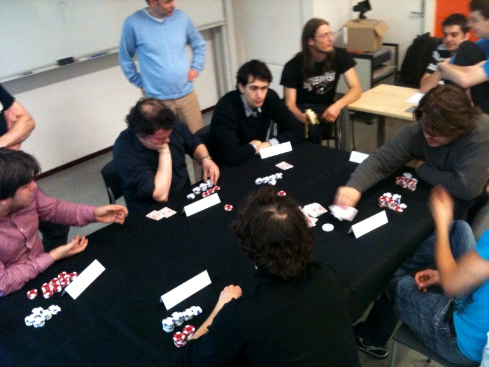
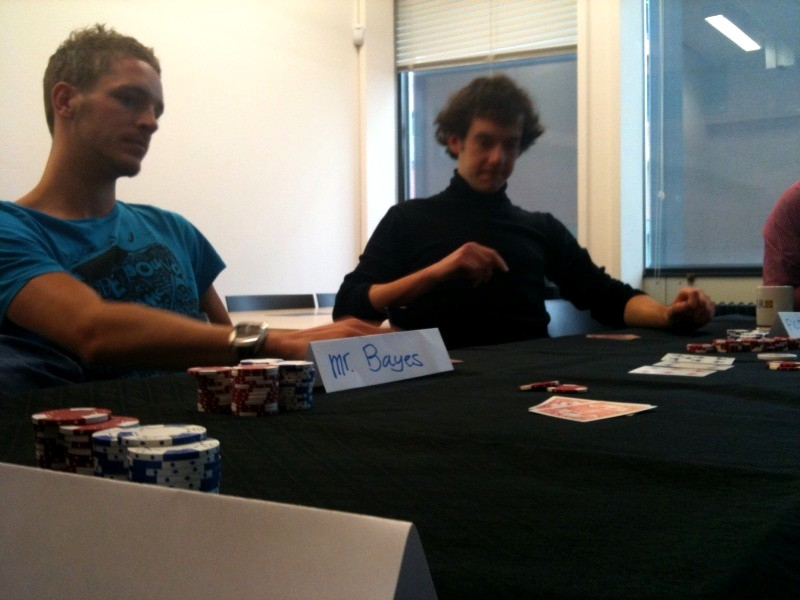
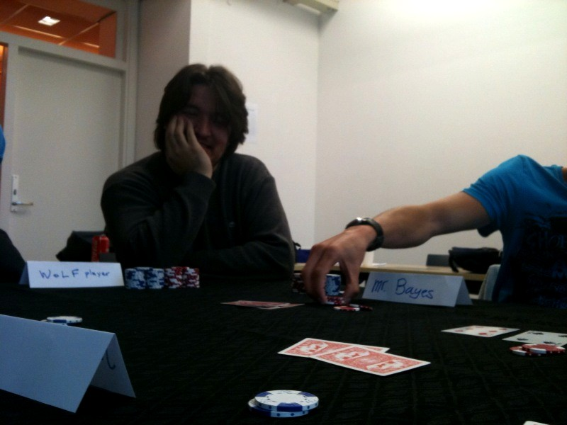
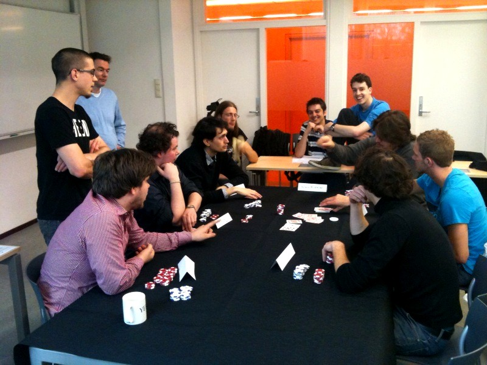

| Edition 2019-20 Edition 2020-21 |
Card poker (such as Hold'em) is a game of imperfect information where in between rounds (“hands”) players may adapt to each others' play (if they think that is necessary). [In poker, change of playing style to disorient opponents is known as “shifting gears”.] Although there is scientific work on real-world poker, it is generally acknowledged that real-world poker is too complex for a transparent and exhaustive mathematical analysis. To this end, more simple versions have been proposed, such as Rhode Island Hold'em and Kuhn poker. For these types of poker, a number of concrete results have indeed been attained. Recently (Januari, 2015), it has been claimed that heads-up hold'em has been solved.
Presented byLecturer. |
SlidesT.B.P. |
ScreencastNot available. |
AssignmentNot this year. |
|  |  |  |  |
| Various learning techniques (see name tags) were tested empirically in the 2nd half of the last meeting in 2011. (Photo's Shoshannah Tekofsky.) |